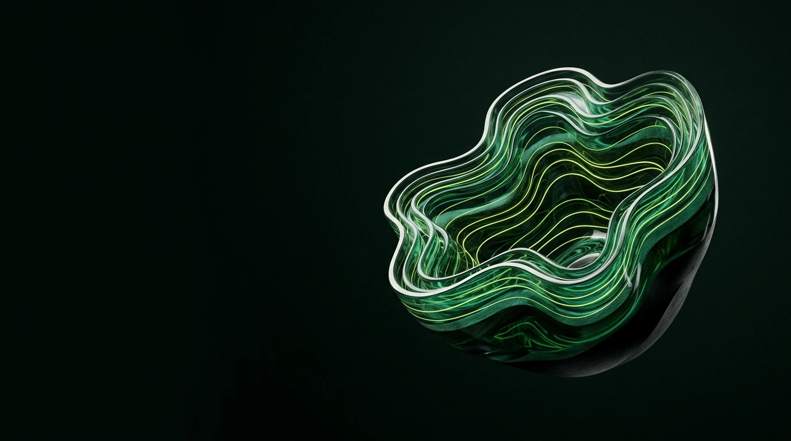
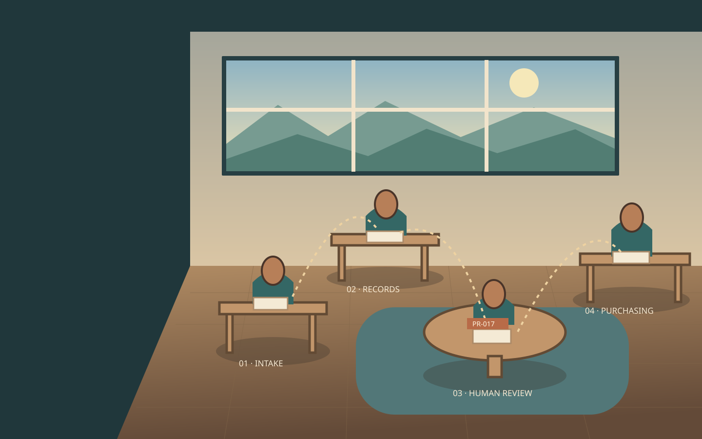
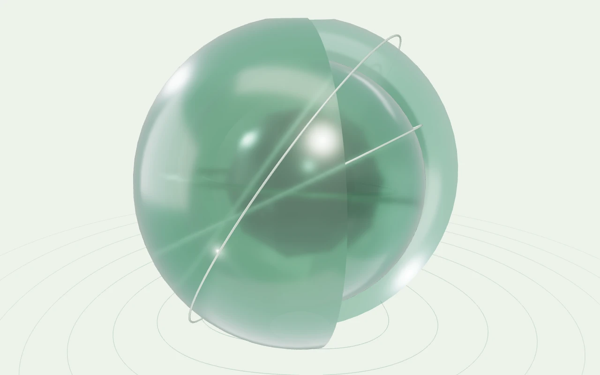

Complexity lives in the handoffs.
A request changes hands. Someone confirms the details. The next team needs the right record to keep moving.

We build business software that connects teams, automates routine work, and makes complex operations easier to manage.
Scroll to exploreSwipe up to explore
A request changes hands. Someone confirms the details. The next team needs the right record to keep moving.
We map who submits, reviews, and approves the work, then give each decision a place in the system.
Give each team the records it needs and a clear way to move work forward. That same principle shapes Salryn.
Salryn brings the records, decisions, and day-to-day work of a business onto a shared foundation. Configure it around the work your team does.
Explore Salryn →

Sales, stock, purchasing, finance, staffing, and operations share one foundation. Security and Infrastructure are included throughout.
Conceptual architectural preview illustrating Salryn's eight core engines and twelve potential industry families. Availability and exact deployment scope are confirmed directly with Kirjane.



These anonymous software concepts illustrate the kinds of problems we design for.
A clear path from the way your business works today to software your team can build on.
DiscoveryEach decision shapes what comes next.
Discovery
Before writing code, we study the routines, constraints, approvals, and bottlenecks that shape daily work.
What you take forwardA verified workflow map and implementation scope.
Explore our approach →Every useful system starts with understanding the work.
Tell us where the work gets complicated. We’ll start by understanding what needs to change.
Start a conversation →